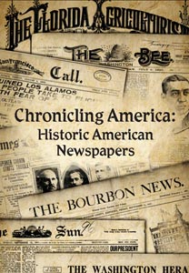

Notice: All Library of Congress research centers are closed to the public (including researchers and others with reader identification cards) until further notice to reduce the risk of transmitting COVID-19 coronavirus. All Library-sponsored public programs are also postponed or cancelled until further notice. Online resources and reference services, such as Ask a Librarian, will continue to be available during this time. For more information, see: www.loc.gov/coronavirus.
|
Chronicling America:
Reading Room Collections: Finding Aids:
National programs:
Other:
|
 Headlines and Heroes (blog) |
Because of the closure of our reading room, we
can no longer accept advance requests. All offsite material has been
returned to storage.
Location: Map showing location Hours: Closed until further notice. Monday, Wednesday, Thursday: 8:30am - 9:30pm (Request materials until 8 pm) Tuesday, Friday, Saturday: 8:30am - 5:00pm (Request materials until 4pm) Closed Sundays & Federal Holidays. Calendar of Events Ask a
Librarian |
| The Serial &Government Publications Division maintains one of the most extensive newspaper collections in the world. It is exceptionally strong in US newspapers, with 9,000 titles covering the past three centuries. With over 25,000 non-US titles, it is the largest collection of overseas newspapers in the world. Beyond its newspaper holdings, the Division also has extensive collections of current periodicals (70,000 titles) comic books (over 7,000 titles) and government publications (1 million items). | ||
| The
Library of Congress >> Researchers September 20, 2020 |
Legal | External Link Disclaimer |
Contact
Us: Ask a Librarian |